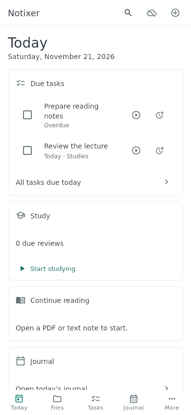
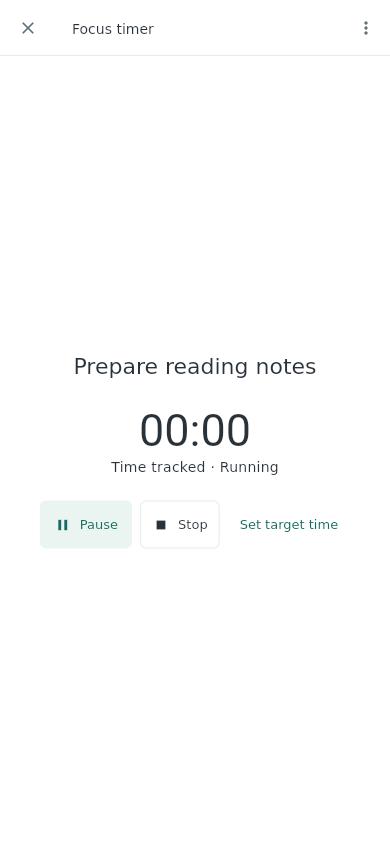
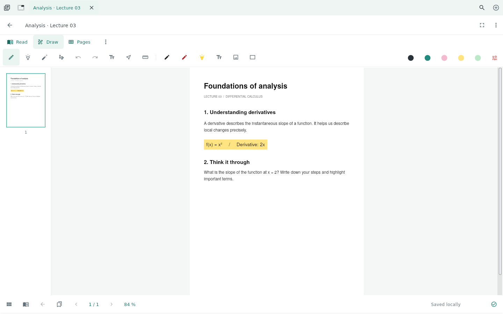
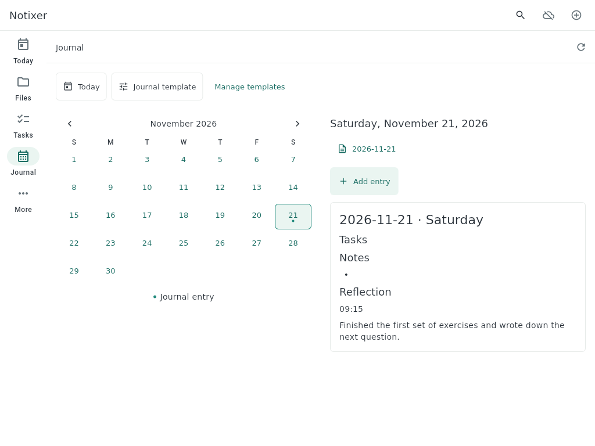

Plan your day and focus on one task
See what’s due, resume reading or start a review from Today. Open the focus timer straight from a task to track your work.




Notixer brings handwritten notes, PDF annotations, Markdown, and study tools into one workspace. Work without an account or internet connection, with optional end-to-end encrypted sync on your own server.

See how the workspace fits a phone, tablet or desktop. Select any screenshot to view it at full size.
See what’s due, resume reading or start a review from Today. Open the focus timer straight from a task to track your work.


Pick a day in the calendar to revisit previous entries. On a wide screen, the selected day’s notes sit beside the calendar.

A flexible workspace for notes, research, planning, and learning.
Write and sketch with stylus support, pen presets, highlighting, lasso selections, and page templates.
Import PDFs, mark up text, add notes, search document text, and export your annotations.
Create linked notes with checklists, tags, backlinks, journals, templates, and graph view.
Collect unfinished Markdown tasks, save ideas quickly, and find content across your library.
Use study covers and spaced repetition to practise and revisit material over time.
Keep local backups, export notes, and recover previous versions or deleted work.
Your notes stay usable without the cloud. If you want to work across devices, you can connect an optional self-hosted sync server with end-to-end encryption. You control the infrastructure and recovery key.
Download a release for your platform or explore the source code and build instructions on GitHub.